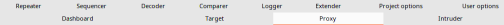
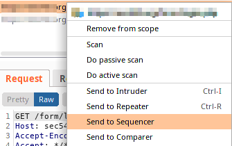
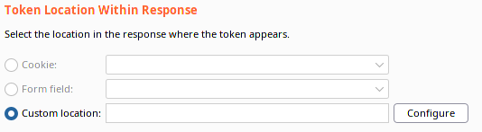

Collect Session Credentials
• Manually collect the session credentials
• Use customized sctipts
Burpsuite SequencerSequencer is the session token analyzer of Burpsuite
1. From Proxy
2. Select the request to the Webpage that have created a Session token and send it to the Sequencer
3. On the Sequencer tab, we can identify the token, either by:
◇ allowing Burp to determine it
◇ by manually selecting it.
 We can also load tokens from a file. This allows us to take any type of token and determine its randomness.